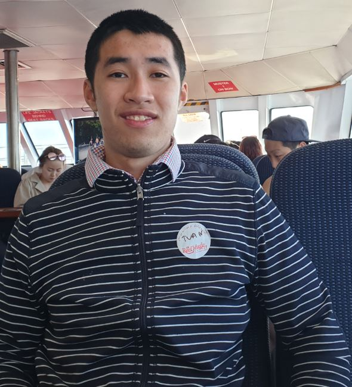

This is the first website
Home | about me | My interests|
About Me

My name is Tuan Luong, I'm currently in my second year of the bachelor of IT, having just completed the first year mostly online through OUA and RMIT due to COVID 19.
I've had an interest in IT since i was small ever since my parents first brought me a gameboy. Ever since i've started my IT course, I've felt more welcome than ever before, much better
than nursing and lab med since IT is based on pattern recognition, logical thinking, high knowledge and problem solving. Nursing and Lab med at Bundoora involves interpersonal skills, moral and ethical reasoning and
art which, i'm not very good at because of my aspergers/autism. In IT I have a strong interest in networking, SQL, programming and software design/implementation. But besides IT and my computer love, I have a strong interest in the underwater world, which is diving and swimming
which feels so good for a person with aspergers. I love the ocean so much, every time I go to the beach in NSW or QLD, I truly am where I belong, seeing marine life, turtles, fish and whales. Especially the groper/wrasses you find on the east coast as on my home page
What I expect to gain out of building IT/ web programming is working in a group, making new friends, dealing with conflict and web programming/ front end dev skills so I can hopefully have bursary/ internship in my favourite place and outback city canberra.
I like the underwater world because it is so peaceful and quiet, seeing all the fishes and marine life in the ocean, my ocean is where i call my true home because it calms my aspergers/
autism, giving me a break from the surface. Unfortunately due to COVID 19, I'm doing it virtually by playing a game called endless ocean. Which simulates scuba diving and has a great story line to it.
Anyways, my dream and aspirations is to have my bursary year/placement/internship in the heart, the soul and the outback city, Canberra. This is because Canberra has a lot of computer science/IT in the city with
the outback/rural town lifestyle. There is a lot of IT/CS in CBR due to the feds living there. It is much less busier than Melbourne and its close to the iconic ocean city of Sydney so I can go Scuba Diving/Surfing there with the magnificent tropical reef fish living in the sydney harbour. Lot of Great Barrier Reef fish migrate down to sydney during summer
so I can see them with my scuba gear. Also canberra becomes a winter wonderland during winter with the snow, right in the ACT national parks. Canberra is a great place to be, hence why i want to do Bursary there. Also here are some images of the things that I like/passions.